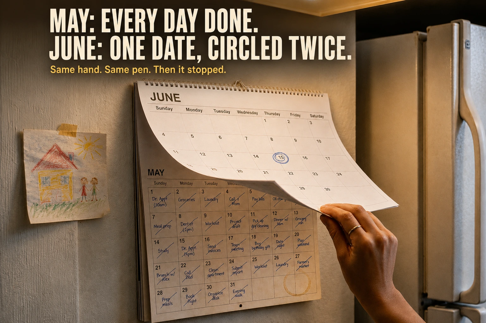

The Work That Disappears When It's Done Right
Why the most important labor in a home leaves no evidence of itself — and what it costs when nobody notices.
Read the storyShe woke before the alarm.
For a few seconds, the house still belonged to yesterday. The ceiling. The particular light. The quiet that precedes a day before the day knows it has begun.
Then she noticed the absence.
Not the absence of sound. The absence of expectation — the specific, shaped silence where something had always been: footsteps downstairs, a cupboard closing gently, the smell of coffee before she was conscious enough to want it.
Mary lay still and listened to what was no longer there.
Then John called from his room. Mama. And the day began.
She carried him downstairs to a kitchen that looked exactly the same as it always had. The mugs beneath the cabinet. The fruit bowl on the table. The calendar beside the refrigerator. Everything in its place.
Everything except the day.
She reached for the coffee machine. Filled the water reservoir. Found the filters. Started it running. Only then noticed the clock above it: 12:00, blinking. A power outage overnight. Someone had always reset it.
She packed John's daycare bag. Halfway to the car, she realized she'd forgotten his lunch. Back inside. Back out. His sweater. She stood on the front step and laughed once — the kind of laugh that only exists because crying feels excessive before eight in the morning.
She arrived at daycare thirty-five minutes late, having tried for fifty.
The teacher smiled. "Running behind today?"
"Just one of those mornings."
She had heard that sentence from hundreds of parents. She had no way of knowing Mary's morning hadn't simply been busy.
It had been unsupported.
On the drive home that evening, Mary ran a mental inventory without quite meaning to. Car service — due? Insurance — renewed? Pharmacy — did she call? The pantry — how low was the baby formula? A daycare email she had meant to answer was still waiting in her drafts folder, where it had been waiting for eleven days.
Each question generated another. None of them had an obvious answer. None of them felt urgent.
All of them, somehow, used to be resolved before she thought to ask.
The First Clue
It had been building for weeks — a slow accumulation of small failures she kept dismissing as coincidence.
The pharmacy closed eight minutes before she arrived, holding her son's prescription. A pediatric appointment disappeared between a video conference and a frozen internet connection. An envelope marked FINAL NOTICE arrived and was slipped beneath a stack of unopened mail. Thursday came without milk. Saturday without diapers.
Nothing catastrophic. Just a steady, grinding friction where things had always moved smoothly.
One evening she stood at the refrigerator long after she'd stopped being hungry, cycling through questions she couldn't answer. Was the car due for service? Had she renewed the insurance? Had anyone actually replied to the school email, or had she only intended to?
The refrigerator light clicked off.
She was still standing there.
Outside, an ambulance crossed the sleeping city. Inside, the overdue notice remained beneath the unopened mail. Nothing had collapsed.
And yet ordinary life no longer felt ordinary.
Something was missing that she had no name for. She had never needed a name for it. She had simply lived inside it, the way you live inside a building without thinking about its foundations.
The Calendar
The calendar had been hanging beside the refrigerator since they moved into the house. One evening she pulled the current page down.
April. Every square filled. Oil change. John's vaccination. Water filter. Electric bill. Call Mom. Dog food. Each item crossed out with the same blue pen. Small promises, kept.
She turned to May. The same handwriting. The same certainty.
Then June. Blank spaces. A pediatric appointment circled twice, nothing crossed out. The page looked like someone had stood up in the middle of a sentence.
She flipped backward through the year. Appointments. Service dates. Prescription refills. School forms. Insurance renewals. Birthdays. Maintenance intervals.
Individually, each entry looked ordinary.
Together, they looked like a system. Like someone had been running a quiet operation behind the surface of daily life — anticipating, scheduling, preventing, maintaining — and had one day simply stopped.
She already knew who had written it. She had simply never looked at it as his.

Later that night, searching a kitchen drawer for a pen, her fingers found something else. A sticky note. Slightly yellowed, adhesive nearly dried out. The handwriting immediately familiar.
Milk before Thursday. It'll run out.
She checked the date penciled in the corner.
Almost a year old.
She stood with it for a long time.
Not because of the milk.
Because of the word before.
Not after. Not when it runs out. Not even on Thursday.
Before.

Someone had been living three days ahead of this house. She had been living inside today.
She set the note on the counter. She did not throw it away.
Who He Was
When they first met, nobody noticed Mikki.
Not because he was quiet. Because he was attentive, and attention does not announce itself.
One afternoon in their second year of university, the projector failed mid-lecture. The professor sighed. Half the students reached for their phones. Mikki stood, said nothing, and left. Five minutes later he returned carrying another projector from the engineering lab two floors down. The lecture continued. By the end of the hour, most people had already forgotten the interruption had occurred.
Mary hadn't.
She asked him afterward how he'd known where to look.
"I didn't," he said.
"You looked confident."
"I just started where it was most likely to be."
That was Mikki. He didn't wait for certainty before taking responsibility. He simply moved toward the most likely solution, adjusted as he learned more, and kept going.
Their first apartment was smaller than most people's living rooms. The kitchen drawers jammed. The bathroom door never fully closed. The heater complained from October through March. Neither of them minded. On one shared notebook page — alongside books to read and places to visit someday — she found a heading in his handwriting.
Things Future Us Will Thank Us For.
She remembered laughing. "Future us sound exhaustingly organized."
"They'll have to be," he said.
"Why?"
"Because one day life will become noisy." He looked at her directly. "I'd rather handle things now than scramble later."
"You worry too much."
"I prepare too much." He corrected it without edge. "They look similar from the outside."
She had not understood the distinction then.
She was building a very detailed picture of it now.

The Operating System
In the fourteen months after Mikki lost his job, the house continued to run.
Not conspicuously. Not in any way that registered as management or effort. The pantry was never full, but it was never empty. The car never looked freshly maintained — it simply never broke down. John's vaccinations never felt organized — they simply happened on time. The utility bills never became emergencies. The winter coats appeared from storage the week the temperature dropped, which happened to be the week before Mary remembered to look for them.
Nothing seemed remarkable. That was precisely why none of it was noticed.
Mikki woke before sunrise. He treated unemployment as a profession: five applications by noon, two follow-up emails by afternoon, and between them, the quiet management of a household containing a toddler and a working spouse. He checked the morning forecast — rain predicted after four — and moved the stroller into the garage with an umbrella tucked in the storage pocket beneath the seat. John would never know why he stayed dry that afternoon. There was no reason he should.
He wrote two words on the shopping list. He moved the recycling bins to the curb. He fixed the washing machine when it leaked — said only "it was leaking" when Mary asked, "think I got it" when she said oh, and the floor never flooded and there was nothing further to discuss.
Late one Tuesday, after John was finally asleep, he walked through the house. Locked the back door. Checked the windows. Set the dishwasher to run after midnight when the electricity rate dropped. Plugged Mary's laptop into the charger, which she had forgotten again. Found the folder for tomorrow's client meeting and set it beside her handbag, because she had mentioned three days earlier that the office was in a neighborhood she didn't know well, so he had already printed directions and left them there, inside the folder, without saying anything.
She picked them up the next morning.
"Oh — right."
The moment lasted five seconds. It disappeared into the day.
He checked the smoke detector before climbing the stairs. Green. Good. He stood in the hallway and the house was still and maintained and ready for whatever came next.
Everything was ready for tomorrow.
He did not know, then, what tomorrow would bring.

Why The Work Disappears
The question forming in Mary's mind — how had she missed all of this? — has an answer. It is not a comfortable one, because it removes the convenient explanation that she had simply been careless.
She hadn't been careless. She had been human.
In 1989, sociologist Arlie Hochschild introduced the concept of the second shift: the unpaid domestic labor that continues after paid work ends, and that research consistently showed women performing in dramatically higher quantities than men. Hochschild's framework was revolutionary. But it measured what could be counted — cooking, cleaning, childcare hours. What it did not fully account for was something researchers have since named cognitive labor, or the mental load: not the work itself, but the ongoing mental effort of noticing what needs doing, remembering to do it, planning when and how, and monitoring whether it has been done.
The execution of tasks, it turns out, is often the smallest part of managing a household. The larger work — invisible to everyone, including frequently the person performing it — is the anticipatory architecture that makes execution possible.
A 2019 study in the American Sociological Review found that cognitive labor in households is distributed far more unequally than the physical tasks researchers typically measure. It also found something that stopped many readers: the more efficiently cognitive labor is performed, the less visible it becomes to the partner who benefits from it.
Let that sit for a moment.
Mikki's competence was, structurally, the mechanism of his own disappearance. The better he maintained the system, the more the system appeared to run itself. The more it appeared to run itself, the less visible he became as its operator.
But this still leaves a question: why couldn't Mary simply look and see?
Psychologists call what she experienced inattentional blindness — the well-documented failure to notice things that appear in plain sight when attention is directed elsewhere. In its most famous demonstration, researchers asked participants to count basketball passes between players in a short video. Roughly half — sometimes more — failed to notice a person in a gorilla suit who walked through the frame, thumped their chest, and exited. The gorilla was not hidden. It was simply not what anyone was counting.
Mary was counting basketball passes. Hours worked. Income earned. Her own exhaustion at the end of each day. These were the metrics her brain had been trained to register as evidence of contribution.
Mikki was the gorilla.
What made his labor particularly undetectable was its specific type: what researchers now call anticipatory care. This is the work of living ahead — of seeing the gap between what exists today and what will be needed tomorrow, and closing it before anyone experiences it as a gap. The smoke detector battery replaced before the alarm sounds. The prescription refilled before the bottle empties. The umbrella placed in the stroller before the rain arrives.
When anticipatory care succeeds, it produces nothing visible.
No drama. No rescue. No moment of relief.
Just ordinary life, proceeding smoothly, as if on its own.
Successful prevention erases its own evidence.This is the central paradox of invisible labor: the more successfully it is performed, the more completely it disappears. The house never floods, so no one thinks about the person who fixed the washing machine. The child never runs out of fever medicine at 3 a.m., so no one thinks about the person who checked the cabinet on a quiet Sunday. The oil gets changed before the engine warning light comes on, so no one thinks about the person who scheduled the appointment.
The work's success is the proof of its existence — and simultaneously the reason it leaves no proof at all.
What Was Also Hidden
But the disappearance was not purely structural. Something in their specific circumstances made it worse.
Mikki had been unemployed for fourteen months by the time the argument arrived. Seventy applications. Twenty-three interviews. Seven final rounds. No offers. He read each rejection once, closed it without forwarding it to anyone, and opened the next application. Some disappointments become too repetitive to describe. He had stopped describing them.
Each morning he woke before everyone else. He pressed the same blue shirt even on days when no interview was scheduled. Not for performance. Because the routine held something together that the rejections kept loosening. He was doing two jobs simultaneously: pursuing the one the world would compensate him for, and maintaining the one that kept the household from dissolving. Neither came with a paycheck. One generated visible output — applications, email threads, interview confirmations. The other generated only the absence of problems.
He sat one evening with a rejection from a company he had spent six weeks preparing for. Seven interviews. A reference check. Then a form email. He read it once. Sat with it for a moment. Folded his laptop closed.
Then he went downstairs and made dinner.
Not because he felt fine. Because John was hungry and the evening required someone to be functional, and he was the person available to be that.
Mary was working ten-hour days from a home that had become simultaneously an office, a daycare, a dining room, and a playground. Her exhaustion was real. Exhaustion does not expand vision. She saw her paycheck arriving and her exhaustion accumulating and Mikki at home, and the arithmetic of that picture seemed legible.
In relationships under financial pressure, financial contribution tends to function as the primary — often the only — metric by which domestic partners assess relative effort. Income appears on a payslip. It arrives in a bank account. It can be stated in conversation. The cognitive and operational labor of splitting domestic responsibilities without building resentment appears nowhere. It produces no number. It can only be seen by someone deliberately looking for it.
She had looked at a man doing two full jobs and seen a man doing none.
He had watched her look, and had not known how to make himself visible without sounding like he was asking for something. There is a specific exhaustion that comes from maintaining invisible labor while also being aware that it's invisible — from watching it go unseen and concluding, eventually, that explanation would only feel like grievance.
He chose silence.
She chose silence.
Both of them believed they were being kind.
The Argument
The arguments didn't begin with shouting. They began with arithmetic.
"I worked ten hours today."
"I know."
"I'm tired."
"I know."
"You've been home."
A pause.
"I've been working."
Another pause.
"Doing what?"
The question landed between them. Not cruel. Not loud. Just heavy with everything neither of them had said in the preceding months.
Mikki looked around the kitchen. The calendar. The grocery list. John's daycare bag, packed for tomorrow. The stack of paid bills waiting to be filed. The lunchbox already made for tomorrow's lunch.
"I don't think you can see what I'm trying to do."
Mary closed her laptop.
"I see that I'm the only one paying for this house."
The room changed shape.
Mikki nodded. Not in agreement. In recognition — that this was the ledger she was reading from, and that the work he had been doing existed on no ledger she could see. That explaining this now, when they were both exhausted and both already on the other side of something, would require her to simply take his word for it. And he was too tired to ask for that.
He picked up the blue pen.
He looked at tomorrow's calendar entries: Oil change. Electric bill. Pick up Mrs. William at 3:30. John's pediatric appointment. Birthday card. Renew insurance.
He set the pen down without crossing anything out.
He closed the calendar.
Gently. As if it belonged to someone else now.
What They Both Kept From Each Other
Communication researchers who study couples under financial stress have documented a consistent and counterintuitive pattern: when financial pressure increases, the frequency of difficult conversations decreases. Each partner begins managing the other's perceived fragility — protecting them from worrying, shielding them from the full weight of what is being privately carried. The result is two people who love each other becoming increasingly opaque to each other, not through indifference, but through a form of care that has turned inward.
Mikki hid his discouragement. Not to deceive her — to protect her from carrying it too.
Mary hid her exhaustion. Not to mislead him — to protect him from feeling like a burden.
Both of them were being generous.
Both of them were growing alone.
What the Strangers Remembered
The pharmacy was the first place it happened.
Mary arrived at the counter with John's prescription. The pharmacist looked up with the easy recognition of someone seeing a regular — then paused, rearranging her expression slightly.
"How's your husband?"
A beat. "He hasn't been by this week." Another beat, quieter. "He usually reminds us when you're running late on a refill."
Said casually. As a given.
Mary had not known there was anything to give.
Three days later, Mrs. William — the elderly neighbor who lived two houses down — stood in Mary's hallway holding a quiet smile that didn't quite reach its destination. Over tea she said, almost gently:
"I thought you knew. He always picked John up on Thursdays."
Mary laughed automatically. "I think you might be remembering someone else —"
"No, dear." The certainty was unhurried, the way certainty is when it has never been in question. "It was always Thursdays. He would come by for me at half three, then collect John, then they would go on their Thursday route. Every week."
Mary called the daycare that evening.
"The Thursday pickup?" The receptionist didn't hesitate. "Every week. Regular as clockwork. John always knew his dad was coming."
She set the phone down.
She walked to the refrigerator. Pinned beneath a magnet was a drawing John had made at daycare — three stick figures, the tallest holding a small blue square she had always read as a toy. She lifted it from the magnet and looked more carefully.
It was a lunchbox.
On the back, in a teacher's handwriting: Family Pick-Up Day. "John loves when Dad comes."
She sat down. Not because she chose to. Because her legs made the decision.
If Mikki had collected John every Thursday for nearly two years, that was more than a hundred afternoons. A hundred departures from wherever he was. A hundred drives across town. A hundred conversations at the daycare door. A hundred buckled seatbelts. A hundred snacks packed in advance. A hundred small reunions that had simply existed in a part of her son's week she had never witnessed.
She had not known.
Not because it was hidden. Because it had happened perfectly, without incident, without her needing to manage or arrange or worry about it — every single week — and perfectly-handled events leave no residue. They do not become anecdotes. They do not generate relief. They simply do not become problems, and non-problems do not become memories.
Then, in the hallway cabinet she had been meaning to sort since January: an accordion folder. No label. Worn soft at the edges from years of use. Inside, hundreds of receipts organized not by store, not by date, not by amount — but by category.
House. Car. John. Medical. Warranty.
She almost smiled. Of course. It was exactly how an engineer would organize a family.

Smoke detector — eight dollars. Furnace filters. Windshield wipers. Children's fever medicine in two strengths. Air-conditioner servicing. Tire rotation. Battery replacement.
None of them expensive. None of them the kind of thing you'd mention.
That was the point.
The expensive failures never arrived because the inexpensive preventions had been quietly, consistently handled. Eight dollars for a smoke detector meant something else never needed to be paid. A tire rotation meant a blowout on the highway never happened. Fever medicine already in the cabinet at the right dose meant a panicked midnight drive to urgent care never occurred.
The receipts were not a record of spending.
They were a record of futures that never happened.
Between two receipts, a folded handwritten list: Milk. Diapers. Dog food. Pay water bill. Call Mom. Pick up Mrs. William — 3:30. John's blue medicine. Birthday card. Each item connected to the next through consequence. If the medicine wasn't collected, John might wake with a fever and nothing to give him. If Mrs. William wasn't collected at half three, she would wait on her front step. If the birthday card wasn't sent, someone would feel — quietly, privately — forgotten.
The list was not a record of errands.
It was a map of the tiny catastrophes that never occurred.
And then, at the back of a folder labeled Taxes: an envelope. Her name on the front, no stamp. Inside, a single folded page.
Things we should talk about when life gets quieter.
How we're dividing responsibilities.
Whether you're carrying too much at work.
Whether I'm carrying too much at home.
What happens if I'm still unemployed next year.
Whether we're both okay.
At the bottom, one final line, smaller than the rest.
I keep waiting for the right time. Maybe the right time doesn't come by itself.
She sat on the hallway floor with the page in her hands.
He had known. He had written it out — carefully, the way he did everything — and had folded it, and had tucked it away, and had waited for the right moment, and the right moment had never come, and the wrong moment had come instead, and now this piece of paper was all that remained of the conversation they had never managed to have.
He had also chosen silence.
She had also chosen silence.
She had been waiting for him to speak. He had been waiting for life to get quieter. Life had not gotten quieter. The right time had not arrived on its own.
The words didn't accuse her.
That was almost the hardest part.

The Route Home
On the first Thursday that was now entirely hers to manage, Mary arrived at daycare ten minutes early.
She had planned for this. She was trying.
John spotted her through the classroom window. He smiled — then looked instinctively past her toward the car park, at the space where someone else used to stand. The smile returned. Children are extraordinarily forgiving.
They buckled in. Mary pulled onto the main road toward home.
A small hand tapped the back of her seat.
"No."
"What's wrong, sweetheart?"
John pointed left at the next intersection. Not tentatively. Definitively.
"Daddy."
"Daddy isn't driving today."
He shook his head with the calm, untroubled authority of someone who is not the least bit uncertain.
"This way."
She turned where he pointed. Then again. Then again. The roads were familiar in the abstract — she had been in this part of the city before — but she had never driven these particular streets in this particular order, because she had never needed to.

They passed a small branch library. John clapped once. Books. They passed a bakery. He pressed both hands flat against the window.
Cookie.
Mary slowed. A woman behind the counter looked up, registered something, came outside.
"You're early today." She looked into the back seat with recognition. "Where's your husband?"
"He isn't — around."
The baker nodded — understanding, it seemed, considerably more than had been explained. "He always stopped by after Thursday pickup. One oatmeal cookie, every week. John always got to carry it."
Mary bought the cookie. Not because John asked. Because not buying it felt wrong in a way she couldn't have articulated.
Back in the car, John accepted it. Took one careful bite.
Then turned and held the rest toward the empty passenger seat.
"Daddy."
Mary's hands closed on the steering wheel.

John held the cookie extended into the silence. His arm didn't waver. He was not confused. He was offering something, in the direction of someone, the way he apparently had every Thursday until this Thursday.
Eventually he lowered his arm.
Set the cookie beside him on the seat, carefully, as though it might still be needed.
They drove on. Another turn. Another point from the back seat. Mary stopped questioning the directions. She followed.
A small park appeared — an old oak, a duck pond, a weathered wooden bench with a clear view of the water. John was out of the car before she finished opening her door, running without hesitation to the bench. He patted the seat beside him.
"Daddy."
Mary sat down.
From the bench she could see the whole of it: the pond, the walking path, the drinking fountain, the faded sign requesting visitors not to feed the ducks bread.
She sat with the picture she was building in her mind: Mikki arriving here every Thursday, backpack over one shoulder, John's hand in his free hand, the oatmeal cookie somewhere between them. No witnesses. No photographs. No record of any kind — nothing that would later constitute evidence that this had ever happened. Just a father and his son at a duck pond on a Thursday afternoon, week after week, until a three-year-old had absorbed the ritual so completely into his body that he could navigate to it across an unfamiliar city from the back seat of a car.
More than a hundred Thursdays.
More than a hundred ordinary afternoons that had built something in John that no one who hadn't been present could have known existed.
Children don't remember who earned the paycheck.
They remember who knew the way home.

The Invisible Operating System
Most people, reading this story, will arrive at this point and do something the article never asks them to do.
They will think of someone.
Not Mary. Not Mikki. Someone in their own life.
The partner who refills the ink cartridge before the printer reports it. The parent who knows which child needs the dentist and when. The person in any household or office or relationship who has organized themselves around anticipating rather than reacting — who has, in doing so, made everyone around them just slightly less likely to encounter the problems that were quietly prevented.
This is what researchers mean when they say invisible labor is systemic rather than personal. It is not a character trait of particularly anxious people. It is a function that every organized household, every functional team, every well-run institution depends on — and consistently fails to see, compensate, or even acknowledge, because its success produces no visible output.
Public health and systems researchers have a name for this pattern: the prevention paradox. Systems that invest heavily in prevention appear, from the outside, to be systems where very little goes wrong — which makes the investment in prevention appear unnecessary. Hospital infection-control teams that succeed in preventing outbreaks find their budgets questioned in years with no outbreaks. City engineers who maintain infrastructure before it fails find their requests for maintenance funding denied because nothing has visibly broken yet. The proof of the work is the absence of the catastrophe, and the absence of the catastrophe is taken as evidence that no work was required.
The same logic operates inside every home.
The smoke detector at eight dollars prevents a fire that costs everything — but the fire never happens, so the eight dollars is forgotten as soon as it is spent. The tire rotation prevents a blowout that could end everything on a highway — but the blowout never happens, so the appointment is an unremarkable Tuesday errand rather than the act of care it actually was.
Invisible labor becomes invisible not through neglect or ingratitude, though both can compound the problem. It becomes invisible because its defining feature is preventing the events that would make it visible. It disappears the moment it succeeds.
To see it requires something deliberate.
It requires asking a different question — not what went wrong today? but what could have gone wrong, and didn't, because someone made sure of it?
It requires looking at the smoke detector and thinking about October, and whether the battery was changed in October, and who changed it, and whether you knew.
It requires looking at the ordinary day and understanding that ordinary days do not arrive on their own.
Successful prevention erases its own evidence.

This is the central paradox of invisible labor: the more successfully it is performed, the more completely it disappears. The house never floods, so no one thinks about the person who fixed the washing machine. The child never runs out of fever medicine at 3 a.m., so no one thinks about the person who checked the cabinet on a quiet Sunday. The oil gets changed before the engine warning light comes on, so no one thinks about the person who scheduled the appointment.
The work's success is the proof of its existence — and simultaneously the reason it leaves no proof at all.
If any of this has made you think about how responsibilities are divided at home — or how to begin splitting domestic duties without the resentment quietly accumulating between you — that recognition is the beginning. And if you are still in the earlier stages of building a family together, it is worth knowing that how couples prepare for their first baby often determines who ends up carrying the invisible load for years afterward.
On the last Thursday of that spring, John came home from the bakery holding an oatmeal cookie.
He held it out.
"I saved you half," he said.
It was the first Thursday in a long time that he hadn't offered the other half to the empty passenger seat.
He was already learning.
To notice.
To offer.
To remember who had been there.

Frequently Asked Questions

Community
Whose Work Have You Missed?
This story is about invisible labor. Leave a thought below — about someone you've seen more clearly, or about the work you carry that nobody names. 🤍